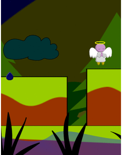
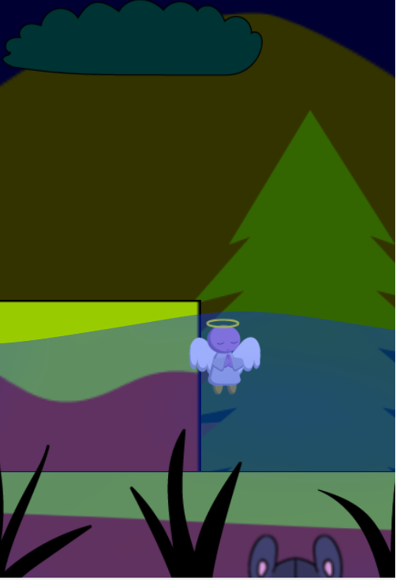

Información
Debes protegerte cuando haces uso de las redes sociales, evita compartir fotos o videos íntimos, respeta a los demás usuarios, usa contraseñas seguras y cámbialas periódicamente, conéctate en redes seguras que tienen contraseñas, de esa forma evitaras problemas para ti y para otros usuarios dentro de las redes de internet.
| Condiciones de victoria | |
|  | Utiliza las plataformas para permanecer sobre ellas y las nubes para transportarte a otro lugar. |
| Condiciones de derrota | |
|  | Si caes al agua o te cae una gota, habrás perdido. |
Controles
 |
Utiliza las teclas direccionales. Presiona arriba para poder saltar y caeras lentamente como una pluma (No puedes saltar cuando estás en el aire) Presiona abajo para bajar de una nube o una plataforma. Presiona izquierda o derecha para moverte en esos sentidos (Puedes incluso hacerlo cuando estás en el aire) |